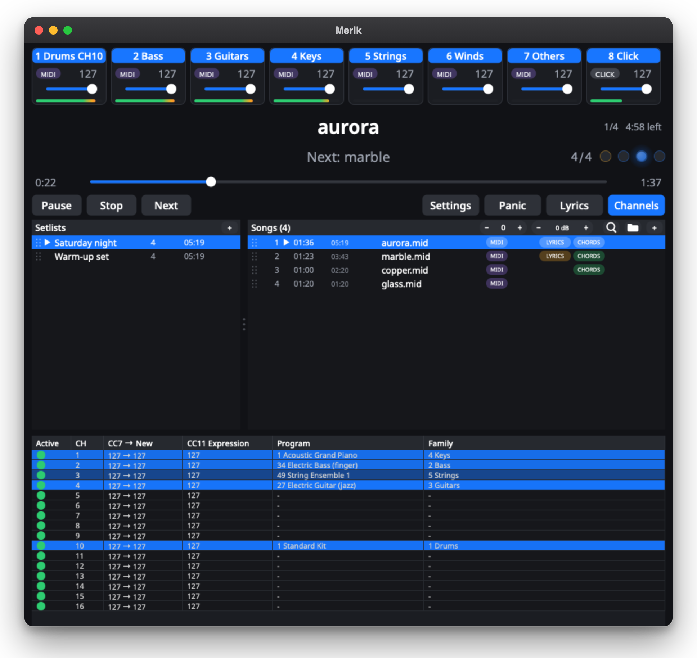
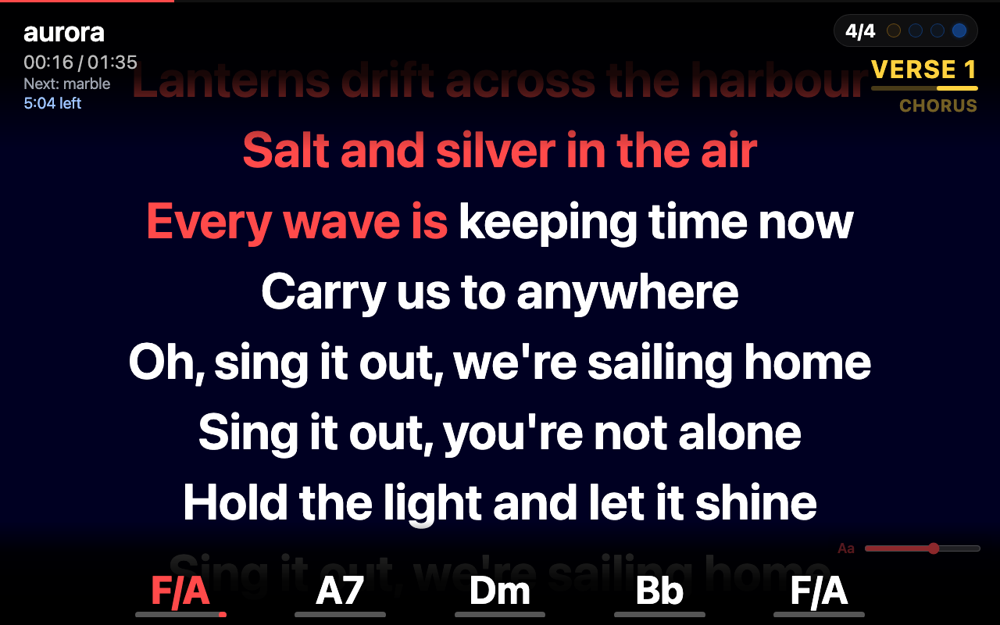
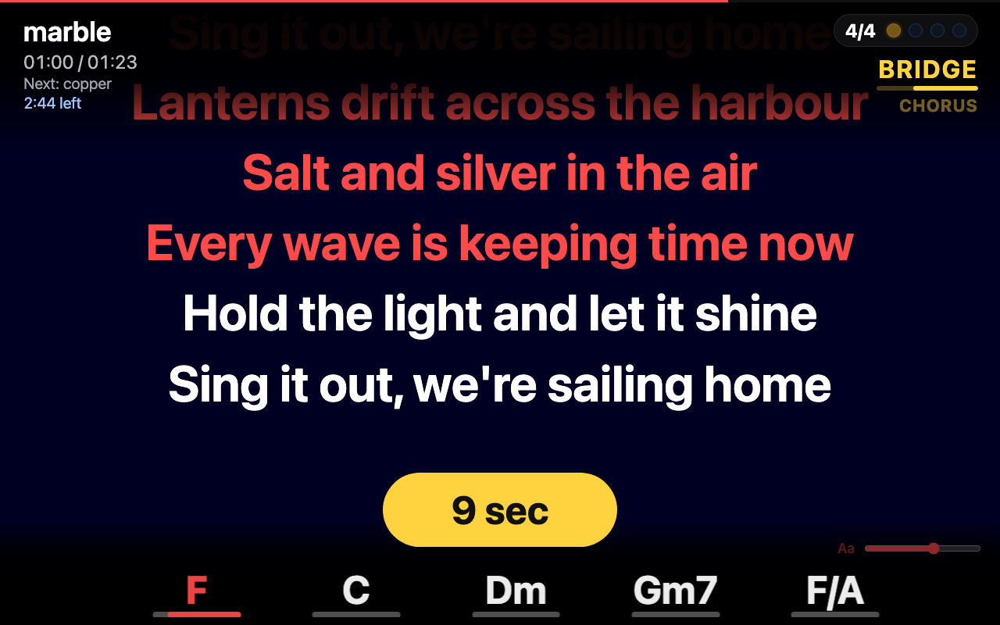
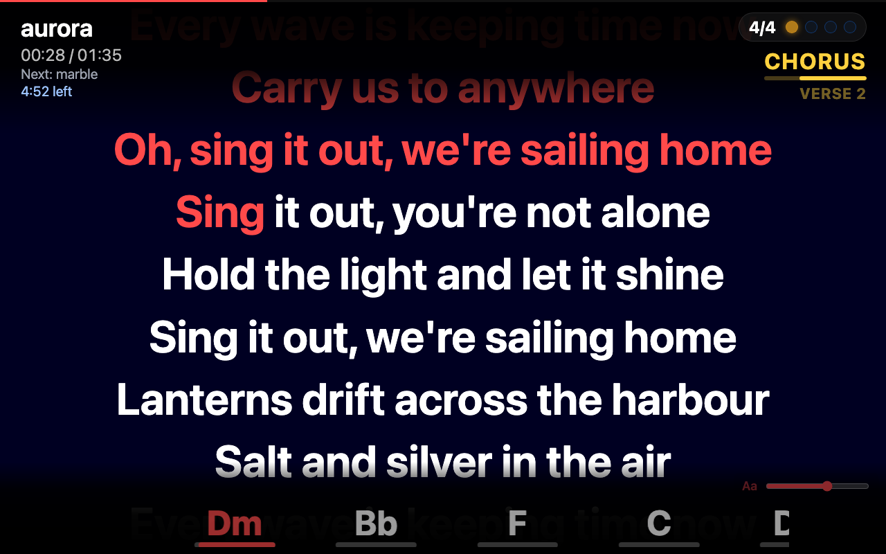
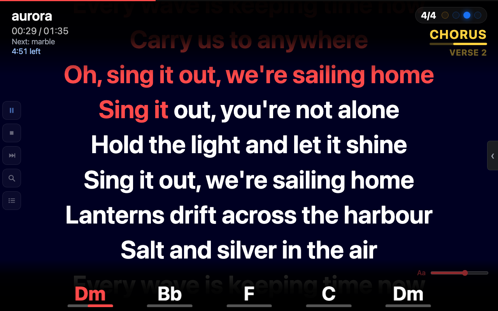
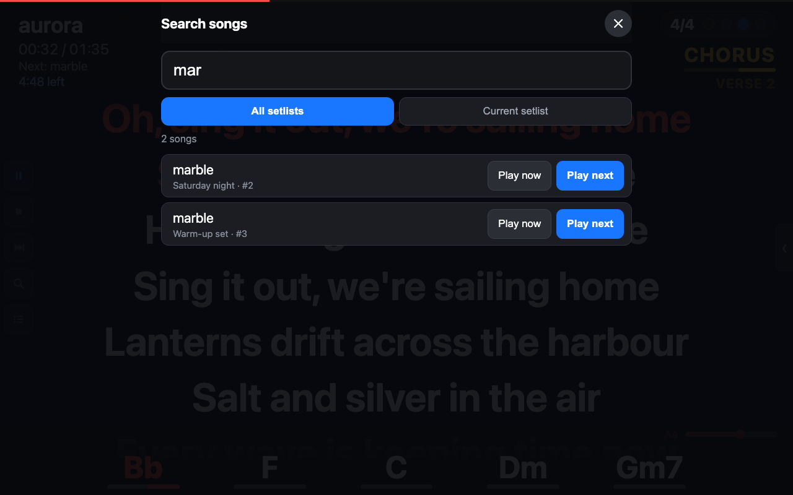
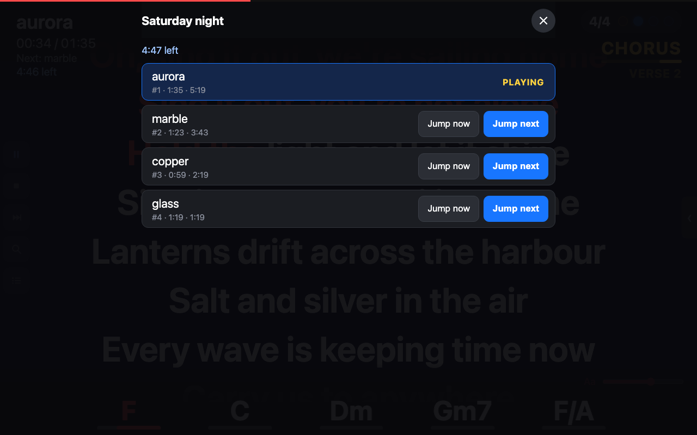

Play your MIDI and audio backing tracks from one laptop, and show the lyrics, chords and sections to everybody in the band, on any tablet or phone.
Free and open source (AGPL-3.0). No cloud, no account.

Plenty of players can play a MIDI file. Merik2 is built for the person who runs the whole band from one laptop.
Connect to an audio interface or straight to a digital mixer over USB. The backing band comes from Merik2, with the click on its own output for the drummer.
Lyrics and chords in a browser on any iPad, Android tablet or phone at merik.local. Nothing to install on the tablets.
Standard lyrics, karaoke (KAR) and Midisoft files, Yamaha XF chord data, markers and text events, with slash chords. Everything transposes with the music.
Intro, Verse 2, Chorus, Solo... read from the MIDI file and shown with a beat counter and a countdown before the next line.
Search the whole library from the tablet, play a song now or next, or jump in the setlist, without losing your place. See how much time is left in the set.
Play MIDI through a SoundFont or a hardware module, play recorded stems, or mix them per instrument family.
Open http://merik.local on any phone, tablet or laptop on the same network. The page is view-only by default, so nobody changes anything by accident.


After a long instrumental part, a yellow pill counts down the seconds to the next line, so the singer knows exactly when to come in.
Intro, Verse, Chorus, Solo... read from the MIDI file and shown at the top right, with the current chord and the next ones along the bottom.


Add your key to the address and the same page becomes a remote: play, stop, next, search and setlist, plus the family mixer.
Type three letters and search the current setlist or all setlists. Play now starts the song at once; Play next plays it after the current song. The setlist then continues where it was.


See the whole setlist with the length of every song and the time left until the end. Jump now goes there at once, Jump next goes there after the current song.
Choose a SoundFont, drop in your files, press play.
Choose a General MIDI SoundFont, or send the MIDI to your own hardware module.
Drag in your MIDI files. Set transpose and volume per song. Merik2 remembers everything.
Go to merik.local on the band's tablets. Lyrics, chords and sections follow the music.
Turn MIDI files into audio stems with the internal SoundFont, a plug-in in your host, or a hardware module.
Merik2 groups the MIDI channels by instrument into eight families: drums, bass, guitars, keys, strings, winds, others and the click. Balance the band with eight controls, switch a family off for a live player, and send the click to its own output.
Free for macOS and Windows. The latest version is on GitHub.
M1 and newer. macOS 14 or later.
Intel Mac, macOS 15 or later.
Windows 10 or 11, 64-bit.
The apps are not code-signed yet, so macOS and Windows warn on the first start. The README on GitHub shows how to open Merik2 anyway. You bring your own SoundFont (.sf2); Merik2 does not include one.
Step-by-step help pages for everyday use, and technical details for advanced users.
Merik2 is free and made in spare time. If it helps your band or your gigs, a coffee keeps the development going.
Support on Ko-fi